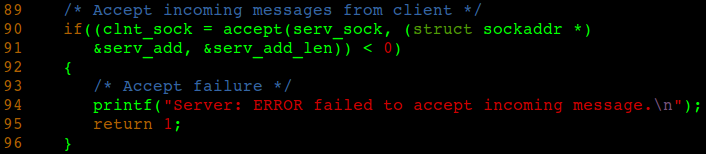
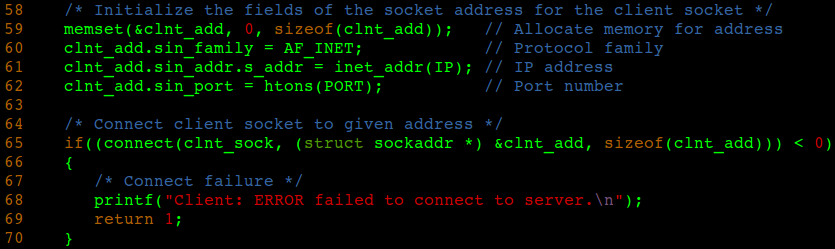
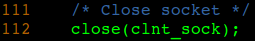

9 September 2018 | Engineering
1. DO NOT use char buffers when parsing files. Use the stat struct defined in the C library.
2. Use the sendfile system call to efficiently and reliably parse all file contents instead of using fgetc and fputc to parse characters at a time.
This video taught me how to use the sendfile system call.
30 August 2018 | Engineering
make debug # compile with debugging symbols
make clean # remove binary files
After compiling the code, run the server using the command ./server&. The '&' makes this run in the background. You can now run the client using the command ./client insert message here. If done correctly, the server should print the message you specified via command line argument when running the client. The output should look like the following:

Watch out for the following errors
1. If there is a bind failure, that means a server might still be running on the specified port and IP address. To verify this, use the ps command to show the currently running processes. To kill the server, use either kill [pid#] or pkill server. Notice in the code you can also change the port. Both the client and the server will need the same port number to connect to each other.
2. If there is a connect failure, the client failed to reach the server due to attempting to connect to the wrong address or the server either terminated unexpected (possibly due to the first error) or it isn't running at all. In the code provided, the IP addresses and port numbers of the server and client are the same so it is unlikely that this error will be caused by the former.
30 August 2018 | Engineering
Server
1. You need descriptors for the server socket to listen and the client socket to receive from. In order to bind them, you will need to create a struct sockaddr that will contain the IP address and port number. The length of this struct will also be needed as an argument for some Socket functions. Lastly, you need a buffer to store message contents to be sent or received.

2. Simply create the socket.

3. In order to bind the socket, you need to initialize the sockaddr struct to contain the protocol, IP address, and port number. Bind the socket and be sure to use the sizeof operator for the length of the struct.

4. Now that the socket is binded, you can have it listen for incoming sockets.

5. In order to achieve a connection between the server and the client, assign the client socket to accept given the server socket.

6. It is now possible to send or receive messages. For sending messages, use the message string length and for receiving, use the buffer size.

7. DO NOT forget to close your sockets when they are no longer in use. This will allow the used ports and IP addresses to be available for new sockets.

Client
1. You will need a descriptor for the client socket to connect to the server. Using a struct sockaddr will store the needed IP address and port number needed to achieve the connection. Lastly, you will need a buffer to store message contents to be sent or received.

2. Simply create the socket.

3. Similarly to bind, the sockaddr struct will need to be initialized in order for the client to connect to the server.

4. At this point, you can send or receive messages.

5. Once again, close the socket when finished.

30 August 2018 | Engineering
Sockets are abstractions that contain the necessary implementation to connect clients and servers over a networked connection in order to provide communication between systems. In a Socket implemented application, a server contains the socket to listen for client bound sockets reaching out on a specified IP address and port in order to form a connection. Sockets are very widely used in networked systems and applications. Examples of programs that utilize sockets are instant messaging apps and cloud storage. In this blog post, I will be discussing the basic universal semantics in C to form a Socket based communication. Familiarize yourself with the Socket state diagram below that shows the basic control flow:
int socket(int domain, int type, int protocol)
An unsigned int value is returned based on the numerical quantity of the socket created. Any socket returning a negative value determines a failed attempt in creating the socket.
domain: protocol to use determined by Socket constant
type: how to communicate with protocol determined by Socket constant
protocol: protocol value (0 for IP)
int bind(int socket, const struct sockaddr * address, socklen_t address_length)
An unsigned int value is returned upon successful attachment of the socket to the given address and port. A negative value determines a failure to connect to the given address and port.
socket: integer value corresponding to a given socket to bind
address: struct containing network routing information including IP address and port number
address_length: length of the struct in bytes
int listen(int socket, int back_log)
The server waits to receive a connection from a client. If this value is negative, the server cannot receive any communication.
socket: integer value corresponding to given socket to receive inbound communication
back_log: maximum length in bytes for queue of pending communication
int accept(int socket, struct sockaddr * address, socklen_t address_length)
A positive integer determines that an inbound socket has been detected and accepted. A negative integer determines a failure to accept the inbound socket.
socket: integer value corresponding to given socket to accept inbound communication
address: struct containing network routing information including IP address and port number
address_length: length of the struct in bytes
int connect(int socket, const struct sockaddr * address, socklen_t address_length)
Connects the client socket to the server socket. A negative value determines a connection failure.
socket: integer value corresponding to given socket to connect to the server
address: struct containing network routing information including IP address and port number
address_length: length of the struct in bytes
ssize_t send(int socket, const void * buffer, size_t buffer_length, int flags)
Returns the size in bytes of an outbound message. A negative value determines a failure to send the message.
socket: integer value corresponding to given socket with message to send
buffer: message contents being sent
buffer_length: size of message
flags: send flag determined by Socket constant or 0
int recv(int socket, void * buffer, size_t buffer_length, int flags)
Returns the size in bytes of an inbound message. A negative value determines a failure to receive the message.
socket: integer value corresponding to given socket with message to receive
buffer: message contents being received
buffer_length: size of message
flags: receive flag determined by Socket constant or 0
int close(int socket)
Remove the socket from memory in order to make the IP address and port available for another socket. This returns a negative value if the given socket doesn't exist.
socket: integer value corresponding to given socket to remove from memory
Quick note: Because Socket functions can fail, it is good practice to return with an error code if their return values determine failure. Also, you will typically need a buffer to make use of sockets. This is the container that gets sent through the socket that enables communication.
28 August 2018 | Experience
24 August 2018 | Industry
Do your research
First of all, it is important to understand that salary is only one out of multiple compensations that a company has to offer. One mustn't forget about health benefits, 401k, paid vacation, personal time, work hour options, ability to work remotely, company culture, location, etc. All of these factors should be weighted in when deciding to apply for a company based on its perks. There is no utopian company so compensate accordingly. Some good links to start research on company perks are:
Glassdoor
Indeed
Paysa
If you are going to negotiate your salary, have an idea of what you are worth based on the skill set you have to offer. As of writing this blog post, the average starting salary for software engineers in San Diego is $78,501 according to Google. Location is also a determining factor of salary. If you must provide a specific answer for your salary expectations, use a range based on substantial research. Also be sure you are comfortable with the lower end of the range of what you ask for. Of course, it is preferable to defer an answer for your salary which I will explain below.
Job Application
Usually, job applications that ask for your expected salary provide a list of salary ranges. Once again, do your research and be sure you are okay with being paid in the low end of that range. If it's an open-ended input, then you can defer your answer by tying "negotiable", "applicable", "open", etc. I normally put "up for in-person discussion". This prevents you from being eliminated for being too expensive or from limiting yourself to accepting a lower pay just to be hired.
Phone screening
You may be asked about your salary expectations during a phone screen. Be careful as going too high may eliminate you from being considered. Going too low is also not the ideal way to approach it. Depending on the employer, they may be checking to see whether you value your work. A good approach is to go on the offensive within reason. It is okay to reply; "On average, how much is offered for this position?" Telling the recruiter that you did research can be risky. Data you find may not be up-to-date or you might appear to be bargaining the company giving the impression that you might be difficult to work with. Also consider taking a more defensive approach. "I would like to discuss this later in the application process in the event that I am hired. I trust that what you have to offer your candidates are competitive based on the impression I have of this company." If all fails and a number must be given, refer to your research and more importantly, be humble but confident. In this case, it may be ideal to take the offensive approach.
Interview
Unless you have been given the offer up front, take the same approach I mentioned in the phone screening section of the application process. Once you do get the offer, this is the ideal time to actively negotiate your salary. Know your value and do your research to ensure that you and the company get the most out of the negotiation. Also, if you are this far in the application process, do not be afraid to go slightly above the market. At the very least, you might be paid above your baseline. This also lets the interviewer know that you value your work and are willing to do the job in a worthwhile manner for you are an investment to the company.
To conclude, it is important to be humble in the process of answering the salary question. Do your research on the company, job position, and location and base your answer from that. If possible, defer your answer until you are given the offer. Once you made it that far, it is then preferable to be confident in negotiating a specific mark. Also, never be timid about salary question. Part of it is an assessment of your confidence and self-worth.
21 August 2018 | Technical
Repairing the superblock:
sudo fdisk -l|grep Linux|grep -Ev 'swap'
/dev/sda1 2048 204587007 204584960 97.6G 83 Linux
/dev/sda2 * 204587008 214351871 9764864 4.7G 83 Linux
/dev/sda4 224116736 419428351 195311616 93.1G 83 Linux
#List all superblocks; '/dev/sda2' is my partition, replace that with where YOUR partition is
sudo dumpe2fs /dev/sda2 | grep superblock
Primary superblock at 0, Group descriptors at 1-6
Backup superblock at 32768, Group descriptors at 32769-32774
Backup superblock at 98304, Group descriptors at 98305-98310
Backup superblock at 163840, Group descriptors at 163841-163846
Backup superblock at 229376, Group descriptors at 229377-229382
Backup superblock at 294912, Group descriptors at 294913-294918
Backup superblock at 819200, Group descriptors at 819201-819206
Backup superblock at 884736, Group descriptors at 884737-884742
Backup superblock at 1605632, Group descriptors at 1605633-1605638
Backup superblock at 2654208, Group descriptors at 2654209-2654214
Backup superblock at 4096000, Group descriptors at 4096001-4096006
Backup superblock at 7962624, Group descriptors at 7962625-7962630
Backup superblock at 11239424, Group descriptors at 11239425-11239430
Backup superblock at 20480000, Group descriptors at 20480001-20480006
Backup superblock at 23887872, Group descriptors at 23887873-23887878
#Choose alternate superblock and repair it; '-y' flag automatically answers 'yes' to all questions; I chose block 32768
sudo fsck -b 32768 /dev/sda2 -y
fsck 1.40.2 (12-Jul-2007)
e2fsck 1.40.2 (12-Jul-2007)
/dev/sda2 was not cleanly unmounted, check forced.
Pass 1: Checking inodes, blocks, and sizes
Pass 2: Checking directory structure
Pass 3: Checking directory connectivity
Pass 4: Checking reference counts
Pass 5: Checking group summary information
Free blocks count wrong for group #241 (32254, counted=32253).
Fix? yes
Free blocks count wrong for group #362 (32254, counted=32248).
Fix? yes
Free blocks count wrong for group #368 (32254, counted=27774).
Fix? yes
..........
/dev/sda2: ***** FILE SYSTEM WAS MODIFIED *****
/dev/sda2: 59586/30539776 files (0.6% non-contiguous), 3604682/61059048 blocks
#Finally mount the partition; remember to use YOUR partition, mine is '/dev/sda2'
sudo mount /dev/sda2 /mnt
Hopefully this was helpful to anyone that has ever experienced this problem. Feel free to contact me for any concerns.
29 July 2018 | Technical

To partition, you simply right click on any unallocated area and allocate some if not all the space left. However, it is preferable to do this prior to installing an operating system in order to prevent space gaps once a system is already installed. Also, partitioning on already allocated areas WILL format that area in your hardrive so be careful and BACK UP all your data before attempting to do any repartitioning. Anything with unallocated space is however safe to touch.
14 July 2018 | Industry
- adopt a mindset that you can never write the perfect resume and be prepared to take constructive criticism; the more flexible you are, the better ability you have in writing a good resume
- NO MORE than one page; if it's over a page, it's a CV so make it work
- avoid having a high concentrated area of text in order to make your resume more desirable to read within a few seconds
- it helps to bold keywords
- numerical metrics look good (ie. "design saved 45 watts of power"; "cut costs by 14%"")
- conserve space; you only have a page (only put job relevant information that can actually help your chances of getting hired)
- objectives/ summaries are a waste of space; whatever job you apply for, the recruiter already knows your objective which is obviously to land that job so just get to the point with your skills and experience
- school projects are frowned upon but if you have no other experience, strive to explain your project in a way that APPLIES relevant skills (ie. "implemented autocomplete algorithm for user generated text" rather than "programmed multiway trie")
- go out of your way to do projects; there's plenty of tutorials online that can apply and sharpen your skills
- use "achiever" rather than "doer" statements for your descriptions (ie. "proposed agreement with payroll contractors slashing labor costs by 10%" rather than "negotiated with payroll contractors")
- send text versions of your resume; there's a good chance that the selection process is computerized and based on keyterms present in resumes; see how your resume looks using ATS (Applicant Tracking System)
- hyperlinks look good for showing proof of your projects but keep the format (don't use hyperlink default format)
- anything you write on your resume is fair game for interview questions so STUDY; the point of your resume is to land the interview, once that is accomplished, the next step is making sure you are prepared to talk about everything in your resume
- keep resume up-to-date; in the unfortunate event you are unemployed for an extended period, do projects and put them in your resume
- unless your relevant experience was temporary work, it's a rule of thumb to add relavant employment only if it lasted for at least a year
- use generic words when labeling sections to make it easy for ATS to read resume (you should have terms such as skills, experience, employment, certifications etc.)
- avoid naming your sections with obscure terms (ie. skills instead of competencies, work/ employment over professional)
Here's a link I stumbled into that gave me resume feedback and my current resume
24 June 2018 | Engineering
2 June 2018 | Engineering
Calling file:
local dict = {}
-- values to store in dictionary
local variable = ""
local function method(-- parameters)
-- function code
end
-- store values in dictionary
dict.v = variable
dict.m = method
-- return the dictionary
return dict
Driver file:
local callee = require("path.to.filename.NOT.dot.lua")
-- call fields using object reference
callee.m()
print(callee.v)
15 May 2018 | Engineering

What I will be talking about in this blog post is how to create a custom packet detail as seen from the image. The packet detail is created based on a dissector typically written in Lua which I will be using for this tutorial. The dissector is to conform with how the packet is decoded given the protocol and will decode the payload of a packet to be decoded under that protocol. Dissected output will show in packet detail. Anything that is not dissected will be displayed as raw data.
Writing the Lua script:
For Wireshark to detect your Lua scripts, they will need to be stored in the "plugins" directory of Wireshark. In Linux, you can find ".wireshark" in the home directory and for Windows in "%appdata%". The first thing to do is to create a protocol using the Lua function Proto. This function takes a string of the protocol name and a string of its description. Call the dissector function on the protocol which takes in the packet buffer, information, and tree as parameters which I will explain soon. We then need to add the port using Dissector.get followed by mapping it with the protocol using add. See the more detailed example below:
trivial_proto = Proto("trivial", "Trivial Protocol")
-- create the dissector function
-- @param: buffer = space in packet to decode;
pinfo = packet info;
tree = container of buffer and info
function trivial_proto.dissector(buffer, pinfo, tree)
-- print name of protocol in its column
pinfo.cols.protocol = "TRIVIAL"
-- add sub payload into tree
local subtree = tree:add(trivial_proto, buffer(), "Trivial Protocol Data")
-- code for dissector goes here
end
-- create table of ports to catch packets from
udp_table = DissectorTable.get("udp.port")
-- register protocol to table
udp_table:add(7777, trivial_proto)
The above code simply creates a protocol, assumes it comes from port 7777, and decodes accordingly. To understand how dissection works, we need to look at the parameters I mentioned earlier:
buffer - space allocated specified by bytes where dissection will take place
pinfo - fields displayed in the columns in Wireshark; above example uses the "protocol" field
tree - protocol section in packet detail; "subtree" is a subsection within the trivial protocol area
The packet dissection process will be heavily reliant on the buffer and output the decoded packet in the tree to be displayed in the packet detail in Wireshark. "pinfo" is a field you can use to print specific information about the packet being dissected. To dissect the raw data, the typical functions to use are:
uint() - converts buffer area to numerical output; must be called when outputting bytes
bitfield(starting_bit, number_bits_to_dissect) - dissects specific bits while converting to numerical output; must not exceed buffer
These functions are called on the buffer object (parameters are starting byte and how many bytes to go through) that itself takes in numerical parameters to highlight which bytes are dissected in raw data. I personally haven't figured out how to highlight bits that are not byte aligned. If you figure this out, I would love to hear about it here. If you need to make use of information outside of the dissection buffer, you can retrieve that data with Field.new("field.name"). Below is an example protocol called "Trivial" and a code snippet for its dissection:
|
|
||
|---|---|---|
|
|
|
|
|
|
|
|
|
|
|
|
|
|
|
|
|
24 with Variable Data |
|
|
|
|
|
|
if buffer(0, 2):bitfield(0, 15) == TRIVIAL_DESCRIPTOR then
-- routine with variable data
if buffer(0, 2):bitfield(15, 1) == 1 then
local bit_size = buffer(2,1):uint()
subtree:add(buffer(3, 1), "Fixed Data: " .. buffer(3, 1):uint())
subtree:add(buffer(4, (bit_size / 8) + 1), "Variable Data: " ..
buffer(4, (bit_size / 8) + 1):bitfield(32, bit_size))
-- routine without variable data
else
subtree:add(buffer(2, 1), "Fixed Data: " .. buffer(2, 1):uint())
endif
endif
Adding core dump:
If you are planning to record packets for several hours, a neat feature to add is core dump. This is simply giving your dissector the ability to spit the dissection in a .csv file to be opened in a spreadsheet. This is useful for looking at specific behaviors by values displayed in Excel format. The only concept I am adding here is implementing file I/O in Lua. You may find the following functions useful:
io.open(file_name,mode) - open a file given by the string name
file_name:close() - close the file; end file I/O with this call
file_name:read() - read file contents
file_name_write(content) - write contents to file
List of file opening modes:
"r" - read-only; also default mode
"w" - write to file by overriding existing content
"a" - append to the file
"r+" - read and write
"w+" - read and write and overwrite existing file
"a" - append and read
29 April 2018 | Engineering

set interfaces ge-0/0/2 unit 0 family inet address 192.168.2.1/24
# map interface to a group
set system services dhcp-local-server group g1 interface ge-0/0/2.0
# set IP pools low and high
set access address-assignment pool p1 family inet network 192.168.2.0/24
set access address-assignment pool p1 family inet range r1 low 192.168.2.2
set access address-assignment pool p1 family inet range r1 high 192.168.2.254
# set lease time and specify IP of DHCP
set access address-assignment pool p1 family inet dhcp-attributes maximum-lease-time 2419200
set access address-assignment pool p1 family inet dhcp-attributes name-server 192.168.10.2
# optionally create static IP table for specific address assignments
set system services static-binding 01:03:05:07:09:0B fixed-address 192.168.2.50
Your config file should look like the following:
family inet {
network 192.168.2.0/24;
range r1 {
low 192.168.2.2;
high 192.168.2.254;
}
dhcp-attributes {
maximum-lease-time 2419200;
name-server {
192.168.10.2;
}
}
}
}
}
Be sure to commit your configurations. You can also verify that DHCP is configured using the following commands in operational mode to see if you get the corresponding output:
IP Address Hardware Address Type Lease expires at
30.1.1.20 00:12:1e:a9:7b:81 dynamic 2007-05-11 11:14:43 PDT
show dhcp server binding address detail
IP address 192.0.2.2
Hardware address 00:a0:12:00:13:02
Pool 192.0.2.0/24
Interface fe-0/0/0, relayed by 192.0.2.200
Lease information:
Type DHCP
Obtained at 2004-05-02 13:01:42 PDT
Expires at 2004-05-03 13:01:42 PDT
State active
DHCP options:
Name: name-server, Value: { 6.6.6.6, 6.6.6.7 }
Name: domain-name, Value: mydomain.tld
Code: 32, Type: ip-address, Value: 192.0.2.33
show dhcp server statistics Packets dropped:
Total 0
Messages received:
BOOTREQUEST 45
DHCPDECLINE 0
DHCPDISCOVER 1
DHCPINFORM 39
DHCPRELEASE 0
DHCPREQUEST 5
DHCPLEASEQUERY 0
DHCPBULKLEASEQUERY 0
Messages sent:
BOOTREPLY 6
DHCPOFFER 1
DHCPACK 3
DHCPNAK 2
DHCPFORCERENEW 0
DHCPLEASEUNASSIGNED 0
DHCPLEASEUNKNOWN 0
DHCPLEASEACTIVE 0
DHCPLEASEQUERYDONE 0
Note that you can also configure DHCP in J-Web under "DHCP Server" or directly edit the config file. To check whether DHCP is actually assigning IP addreses, plug in a computer with its IP set to auto and check to see if it aquires in IP address.
2 April 2018 | Technical
sudo prime-select nvidia # enable NVIDIA GPU
sudo prime-select query # verify which GPU is enabled
I noticed that on the task bar in Linux, I can see the icon of the GPU that is currently running which requires logging out and back in for changes to be applied. I also noticed that running NVIDIA would cause Linux Mint to run in fallback mode. In conclusion, I thought simply disabling NVIDIA fixed the problem which appeared to be the case. It turns out that it was a software problem all along, specifically with the Nouveau driver that Linux uses with NVIDIA. After doing some research, I stumbled upon the command inxi -G used to output system hardware status with the 'G' flag to specify graphics. I was presented with the following output:
Card-2: NVIDIA GM204M [GeForce GTX 970M]
Display Server: X.Org 1.18.4 drivers: intel (unloaded: fbdev,vesa) FAILED: nouveau
Resolution: 1920x1080@60.02hz
GLX Renderer: Mesa DRI Intel Haswell
Mobile GLX Version: 3.0 Mesa 11.2.0
Notice the "FAILED: nouveau" line. I believed this changed how I should approach this problem. I ran NVIDIA once more but this time ran the proprietary driver for NVIDIA in Driver Manager rather than Nouveau. I ran my graphics tests again with NVIDIA enabled and Nouveau disabled. Miraculously, my laptop stayed on for days running these tests. I tried the same for Windows after enabling this configuration on Linux and got the same results. When I ran the "inxi" command on Linux, the failure was gone. I mentioned the issue to a friend who is more experienced in hardware and he happened to know about Nouveau and was adamant in assuring me that it's a terrible driver. Looks like the problem was solved. Lesson, DO NOT use Nouveau. Use Nvidia Prime.
In case you have this problem, here are the steps to rectify it:
1. Install Nvidia Prime via sudo apt install nvidia-prime.
2. Open Driver manager. You can also use the command driver-manager.
3. Make sure to enable the proprietary driver for NVIDIA and not Nouveau.
4. Type inxi -G to verify that Nouveau is no longer failing or even enabled.
14 March 2018 | Technical
Flash drive with enough space
Universal USB installer
One of the following ISO files:
Ubuntu ISO file
Lubuntu ISO file
Xubuntu ISO file
Kubuntu ISO file
Mint ISO file
**You can use whatever ISO file you want, these are just the one's that I know work for this tutorial.**
Your Windows computer (if you don't already have it)
Steps summary:
Step 1: Acquire the materials listed above.
Step 2: Install the ISO file to the flash drive with UUI.
Step 3: Reboot your machine with your flash drive plugged in. Check your BIOS if you need to configure your boot priorities.
Step 4: Go through the installation wizard.
13 March 2018 | Engineering
CLI Mode:
There are 3 modes in Junos. The first mode is your typical UNIX command line which I have not done much work in. If I learn a significant implementation that uses this mode, I will be sure to post about it in a later blog post. The other 2 modes are operational, accessed using the cli command, and configuration accessed using the configure command from operational mode. A lot of my work is done in configuration mode. This is where we are editing the config file. A generic example of this config file looks as follows:
subfield1 {
subfield2 {
## subfieldN Note comments are made using ##
value {
1;
}
}
}
}
The config file is arranged in a hierarchy that is recursively traversed. To change or remove a value, we use the set and delete commands respectively. Respective examples include set field subfield1 subfield2 value 2 and delete field subfield1 subfield2 value 2. The commands are also recursively parsed to check for syntax and whether a field exists in the config file. You can use the question mark (?) character to see an option of available commands. Tab shortcuts also apply which you will need because the hierarchical nature of the config file results in significantly long commands. You can also see the current parameters set using the show command. Things that run in operational mode will require run show in configuration mode such as dhcp-local-server statistics for example. To see the value 1 set in the example file, the command is show field subfield1 subfield2 value. If this were an operational task, the run command will need to be affixed. In operational mode however, it is not needed. You can also change what heiarchy you are in to shorten your commands. For example, after entering edit field subfield1 subfield 2 you can simply enter the command set value 2 since you are in that hierarchy level. To go a level up, use the exit command. In configure mode, after setting desired parameters, the commit command is required for the configuration to become operational. The commit check command checks to see whether the configurations are valid without committing them. This mode is accessible via serial connection.
J-Web:
From here, you can simply edit the config file in edit mode without having to enter the commands. A view mode is also available to see the config file in read only mode. There are also specific features located in the interface that can be used to configure a setting such as dhcp. Editing such settings automatically edits the config file. Committing then is made with a press of a button. This mode is accessible via Ethernet connection with the default IP of 192.168.1.1 like most routers. You must configure the IP address of the Ethernet port to a .1 network or .x for a 192.168.x.1 address. Here's a video on using the J-Web interface:
28 Februrary 2018 | Industry
Question: When looking for candidate employees to hire post interview, what do you look for?
App Folio: The primary thing I personally look for is the background technical knowledge the applicant has in his/ her arsenal. This is the primary but not everything. In other words, if this is lacking, it's most likely a rejection. The knowledge I'm talking about are CS fundamentals such as data structures and algorithms. The next thing I look for are any projects they have done outside of school. This shows me that the applicant is interested in what he/ she is doing and willing to take it outside the scope of their schooling. School related major projects are good but outside of school is a plus. I'm not necessarily looking for any particular set of skills. Our framework is written on Ruby on Rails and me myself never used this before I started working for App Folio. However, one's background knowledge and experience outside of school shows me their learning potential that they can contribute to the company. Lastly, I look for individuals who are excellent problem solvers and more importantly, those who can communicate effectively; get their point across accurately and clearly.
Stemonix: As for technical skills, I look for one's ability to learn new technology and specifically how well they can design. When it comes to education, those with a higher level background are always preferred. But more importantly, I look for what they can design and how good they are at what they do relative to their level education. I look for critical thinkers, those who are efficient, and those who can learn fast given what their technical background has to offer them. Even though higher levels of education are preferred, I really care more about how they can harness what they have to offer. However, the more important side is their attitude. I look up to individuals who have the character of a good employee. This involves their punctuality, organization, work ethic, presentability, and how well they can communicate. The technical side is moreover a tool to get the job done but what really makes a good employee is HOW they work regardless of what technical knowledge they have to offer.
Synopsys: In university, technical background is extremely emphasized and if one can get through the educational rigor their university has to offer without cheating, those are means to an end. A weakness in this mindset is the lack of emphasis in one's soft skills. If I can find a candidate who has excellent soft skills, they will stand out in the talent pool given the addition of the necessary background knowledge to perform their jobs. What I look for is a candidate's ability to communicate effectively and firmly, work well with a team, talk to strangers, offer good customer service, and present well. The technical skills are only a means to an end however, it's the soft skills that will land one a job especially in Silicon Valley. A good candidate would be memorable. This is one who can effectively argue their points and still get along with a team, have good social skills, and be able to present or lecture confidently with the ability to design good power points to back up those presentations. Overall, it is the character that determines who will land the position. The technical background is just a filter for those who have potential.
Aetna: You need to be an excellent communicator. I cannot stress this enough. We get a lot of applicants who have a lot of technical skills to show off but not enough people skills. When it comes to technical skills, showing that one can use their technical background is a way for one to sell themselves in their interview. However, I didn't know what I know now in terms of technical skills before working at Aetna. The act of selling one's self, their ability to SHOW that they can perform the job given their technical background, that's a people skill. I like to see those who are aggressive yet approachable in addition to having the rudimentary technical qualifications. While the technical qualifications are also a factor, the determining factor is one's ability to communicate given their technical background.
Cubic: Communication communication communication! This is what's very important aside of the technical skills. Regardless of whether a candidate is technically qualified, what a good employee has distinction in is their ability to communicate as they are working in order to be productive and produce a favorable work environment. I love questions. One's ability to openly and urgently ask questions shows their interest and urgency to solve their problems. At Cubic, there is only one stupid question and that is the one that isn't asked. The three values I look for in a good applicant is their urgency to produce good work, their openness to communicate, ask questions, and take initiative, and their ability to take ownership for their work and coming up with original and clever ways to do what needs to be done to meet a deadline. Anything technical can be learned on the job but good work is presented in one who can communicate it, not necessarily their technical background. The technical aspect is just the candidate's toolbox that can be expanded with good communication skills. It is also important to note that what will also impress your interviewer is your knowledge on the software development models since these concepts are heavily used in the industry. Technical skills will not make one stand out as much as having the soft skills to back it up. The technical skills just get your foot in the door.
From what I see, although technical skills are important, they are only a means of getting into the hiring process. Typically, an applicant will have a vast set of skills but will not perfectly match the set of skills the company needs. These skills however can be learned on the job and what determines how well a candidate can learn these skills is not just their technical background, but the addition of their work ethic displayed by how well they can communicate. There are several engineers out there with distinct technical skills. What makes one memorable on top of their technical skills set is their ability to communicate effectively. It is an act of selling what one has to work with that can foreshadow how well they will work on a team given a qualified technical background.
App Folio
Stemonix
Sysnopsys
Aetna
Cubic
17 January 2018 | Experience
15 January 2018 | Industry
I have also laid out below some of his works that serve as references for this blog post.


What I am about to explain is a theory that is not necessarily accurate nor is it by any means proven to be true. Capitalism, or some like to call it, a means of opportunity; as implied by "opportunity", there are those that achieve it while there are as those who are exploited by it. A generic example to clarify this would be any competitive game, one that features a winner and a loser. That being said, capitalism has those whom are victorious and those who must work to make it up to victory. In a nutshell, to keep an economy that features free opportunity to socio-economic gain stable, there must be spenders in order to make capitalistic gain possible for the winners of the game. How does college play a role in this kind of society? It is actually more of an economic buffer than a provider of industrial competencies. Generally, we only use 20% of what we learn in school as an application. After 13 years of school, one can only recall a handful of concepts but still competently live their life. For example, out of math, the only means we use as an application are mathematical operations. From science, we indirectly use the scientific method. We learn some language just enough to the point of useful communication. Specifically, as a CS student in college, one can theoretically get by in the industry as a software engineer with a decent knowledge in some programming languages, algorithms, and soft skills. Essentially, this can be achieved in a year rather than 4. One may argue that only those basic skills alone won't make one marketable. I will get to that later but theoretically, one can do the job of a software engineer with those basic skills while the rest are only specific applications that one either happens to know or can be looked up whenever needed. Why do we spend all this time in school possessing a poor ratio of learned to applied concepts with what we study? One theory is economic stability. It is designed for a group of people, typically the younger ones, to be encouraged to spend money which will keep the economy moving and beneficial for those earning money. In capitalism, there must be spenders that gainers benefit from. This explains why society encourages an extended amount of time for the youth to be in school and is independent of whether these individuals can win in the capitalistic nature of the economy by being industrially qualified. In other words, a lot of the college degree is a rite of passage, the proof that one has spent their dues in school funds and is eligible for a role in the economy to finally make a good salary. To answer the argument that only knowing a limited amount of skills regardless of being applicable, will not make one a likely candidate for a job, this is an example of how the capitalistic economy urges one to spend money before landing a role in the economy that makes money. Although one's schooling and degree may have some significance in learning how to become industrially competent, that is only a limited part of it. The other part is maintaining economic stability by urging people to contribute money before being paid to contribute to society. Whether I completely agree with this theory is outside of my intentions of this blog post.
The next thing I would like to discuss is an example that may assess this theory by explaining how my resume has evolved over time. To clarify, I will not be talking about how my resume got better in terms of its content moreover, I will be focusing on how my resume changed as I spent more tuition money to earn my right into a software engineering job. The point I would like to make is the increment in my social title suggested by my resume based on a quantity of dollars that I contributed to a capitalistic economy. Below are links to iterations of my resume tantamount to my time and money spent in education:
- a lot of buffer content to fill one page (ie. objective, addresses)
- soft skills with description to fill space
- no employment; masked with "Professional Experience"
- only containing volunteer work and extracurriculars
- awards only have to do with high school accomplishments
- extracurricular activities is a section
- references is a section
- professional summary added as an improvement from objective
- list of technical skills without applications
- employment present
- professional organizations present
- contains basic projects
- professional summary removed to make space
- more content and technical applications in professional history
- list of skills with applications
- removed references section to make space
- contains hyperlinks
- removed fast food job
- added internship experience
- removed irrelevant certifications
- projects are more large scale and specific
- format of skills changed to make space
The trend I see here is that over time, I have been able to remove insignificant concepts from my resume to make space for more relevant and larger scale experiences as I invest more time and money towards my degree. Once again, I would like to thank Daniel Quinn for this idea.
12 January 2018 | Experience
9 January 2018 | Experience